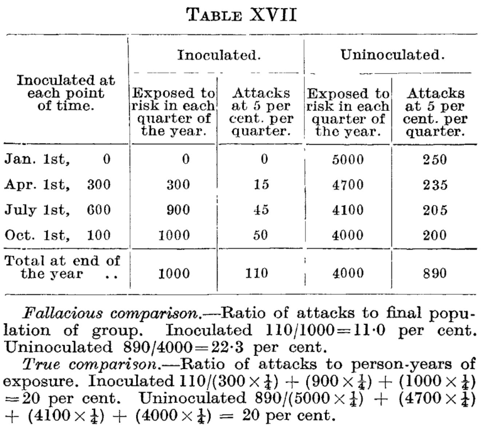
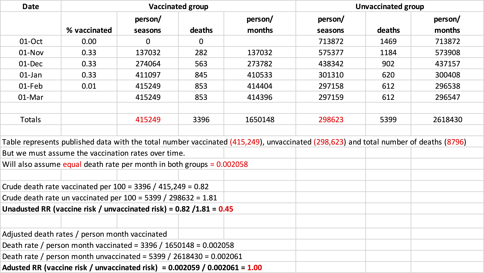
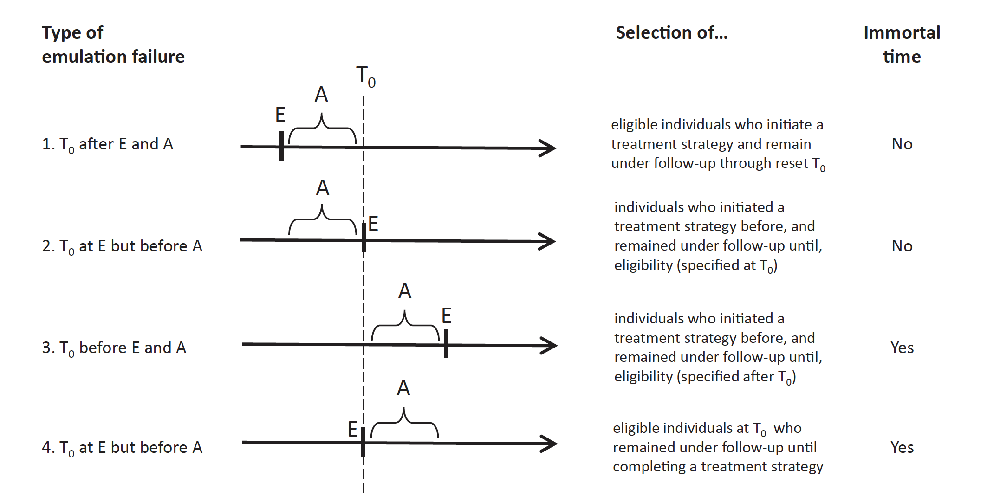

I’m co-teaching a small group learning course on critical appraisal for our MPH students. We tried to avoid the common theme of many critical appraisal courses and journal clubs that simply try to trash whatever article is under review. Rather we divide the groups into three sections and the first one receives only an introduction to the problem, and without looking at the chosen article, discusses what sort of study design, with the associated strengths and limitations, they would consider to address the problem. The second group receives only the abstract and comments on what details they would expect to see in the article. The third group reads the whole article and in addition to highlighting its strengths and limitations tries to answer queries raised by the first 2 groups. The basic idea is not only to improve critical appraisal skills but also to think about possible research designs and the necessary compromises that are often required in doing research.
This week one of the other co-instructors (for reasons that will become evident later) chose an older NEJM article from 2007 on the effectiveness of influenza vaccine in the community-dwelling elderly to evaluate. Despite several strengths including a prospective cohort design with a large sample size and controling for several important confounders, the reported 50% reduction in all cause mortality for the vaccinated group is an obvious red flag that a substantial bias exists in the execution of this observational study.
Letters to the editor immediately following the article’s publication noted that the mortality benefit exceeded all reasonable estimates, as influenza mortality during the winter months typically accounts for 5% or less of total mortality. In these letters, the perceived bias was attributed to residual and unmeasured confounding. While there is undoubtedly some degree of residual confounding, it seems unlikely that it could explain this magnitude of bias, from a theoretical ceiling of an approximate 5% mortality decrease to the reported 50% decrease. The clue to resolving this bias is found by a careful reading of their methods
All noninstitutionalized members of the plans were included in that season’s cohort if they were 65 years of age or older as of October 1, had been continuously enrolled in the plan for the preceding 12 months, were alive on the first day of the influenza season, and were either continuously enrolled or died during the outcome period.
Since it is virtually impossible that the vaccinated individuals all received their vaccination on Oct 1 of each flu season, it appears that the researchers looked in the future to determine their vaccinated and unvaccinated groups. This leads to an obvious misclassification of exposure time. This neglect of the period of exposure to risk was well described by Bradford Hill (of the causal checklist fame) in a 1937 Lancet publication where he even provides a numerical example involving inoculation! The data for his example is presented below with both the true and fallacious comparisons between inoculated and non-inoculated subjects where he assumed the true attack rate was identical in both groups. By neglecting the time of inoculation, the true risk ratio of 1 gives a biased result of a 50% reduction.

Inspired by Hill’s example, I re-examined the 2007 data. Now the authors didn’t give us the raw data, not even the total number of deaths in either exposure group nor the timing of vaccinations so some assumptions must be made. They did provide the total number of vaccinated (415,249), unvaccinated (298,623) and total number of deaths (8796). It seems safe to assume that the vaccinated didn’t all get it on Oct 1. I assumed that on Oct 1 nobody was vaccinated and that subsequently on Nov 1, Dec 1 and Jan 1, 1/3 got vaccinated at each date with 1% waiting until Feb 1. Following Hill’s example, I assumed there was no difference in death rates between the 2 groups and that the death rate per month was 0.002058. Again following Hill’s work I produced the following table.

Now if one analyses the data in the above Table, as per the NEJM (see Total line), the crude RR = 0.45, this is slightly different than the reported RR but to be expected as i had to guess what the actually monthly mortality rates were.
However the essential point is that the unadjusted RR in my Table is derived when the data simulation has assumed a constant monthly mortality rate that is NOT different between the exposed and unexposed groups.
In other words, almost the entire effect can be explained by inaccurate classification of exposure times. Using the proper method of person time, as shown in Hill’s example, gives the correct RR = 1. It is quite amazing that 70 years after Hill’s publication, authors were still getting it wrong. It’s not only the original authors, reviewers and editors but also the whole medical commons. For example, in the 2007 letters to the editor that queried this unbelievable mortality result, nobody brought up this potential source of error, rather everyone tried to uniquely blame residual confounding. Moreover, as of March 23 2023, despite these initial confounding concerns, this publication has been cited 233 times, including 13 times in 2022. In only 5 of these 233 citations was the term “bias” also found and in those papers the discussion was again limited to confounding. Two potential confounding sources mentioned were i) increased vaccinations in the worried well ii) decreased vaccination in those deemed to have too many competing comorbidities for vaccination to make a difference. The majority of articles citing this 2007 publication therefore seem to have taken the results at face value. As an example, in 2023 we can find the following uncritically writing “prevent influenza-related hospitalizations and deaths among older adults” citing this 2007 publication as the reference.
In more modern times, this inaccurate accounting of exposure time and analysis has been termed immortal time bias by Suissa, one of the other co-instructors for our critical appraisal course and who suggested the article for review. Suissa has shown that immortal time bias and can lead to large discrepancies from the truth by either misclassification or selection bias.
Hernan and colleagues have proposed a paradigm of emulating a randomized trial to minimize the biases associated with observational studies, including immortal time. The key is align i) Elgibity ii) Assignment and iii) follow-up \(T_o\) times. Failure to align, as shown in the following figure may lead to i) prevalence bias ii) selection bias iii) immortal time (due to selection bias) and iv) immortal time bias (due to misclassification).

So, my general and specific take home messages are
General
1) teaching is a great way to keep learning about the past and present
2) answers to current problems can often be found in past work
3) although science may be self correcting, the path to self correction can be exceedingly long
Specific
1) when searching for biases, don’t stop with confounding as misclassification and selection bias may be hugely important
2) in the presence of a large unexpected effect size, think IMMORTAL TIME BIAS (especially present in observational pharmacoepidemiology studies) as the magnitue of this bias may dwarf any confounding bias